Python worker: executing one partition's Python code
component index
pyspark.worker runs the supplied Python function in a process local to the executor. Its unit of work is one invocation for a task attempt, not the application script. The Python driver constructs the computation; the runner in an executor JVM supplies the invocation over a socket. The factory may provide the same interpreter to later attempts. A PySpark DataFrame expression implemented entirely in the JVM does not need this worker just because the application was written in Python.
Flow at a glance
- Python worker: The worker sets up this task's context and loads the partition function.
- Partition function: The function adds one to each input, turning 4 and 9 into 5 and 10.
- Result stream: The worker streams those values to the executor JVM, then confirms a clean finish.
Key distinction: Reuse keeps the interpreter alive, not the previous task's context or input iterator.
Show the animated flow

Contract and state
| Lifetime |
State and data |
| Process |
Interpreter, imported modules, and a broadcast registry can survive reuse. The daemon's child loop calls worker.main again after a successful invocation when reuse is enabled. A directly launched worker's entry point instead connects back and calls main once. |
| Invocation |
A new socket message receiver, WorkerInitInfo, Python TaskContext, eval type, function/serializers, metrics, and input iterator. The header includes the split index, driver Python version, task/attempt identifiers, local properties/resources, includes, and broadcast changes. |
| Output |
Serialized results to the local JVM, plus an initialization reply, metrics, accumulator updates, and a finish reply. Worker stdout/stderr are diagnostics, not a record stream to the driver. |
See the init message layout, receiver state transitions and daemon reuse decision. TaskContext and accumulator state belong to an attempt; arbitrary user module globals do not. A retry may run on another process or node, so neither globals nor PIDs identify a logical partition.
Trace: add one to each value in split 7
Suppose rdd.mapPartitions(lambda values: (v + 1 for v in values)) receives 4, 9 in split 7. This is the classic RDD (NON_UDF) socket path, not an Arrow SQL UDF.
Sequence diagram · Open full sizeText equivalent
sequenceDiagram
participant J as Executor runner
participant W as Worker main
participant F as Partition function
J->>W: Init frame with split, context, and pickled command
W-->>J: Init response, empty object on success
J->>W: Serialized partition input and finish markers
W->>F: Call with deserialized input iterator
F-->>W: Yield 5, then 10
W-->>J: Serialized output, then metrics and accumulator section
W->>W: Verify the input finish marker
W-->>J: END_OF_STREAM if ready for reuse
main wraps the socket in a SparkSocketMessageReceiver. invoke_udf decodes the length-delimited init frame, checks major.minor Python compatibility, applies the configured memory limit where supported, installs the task context, and resets spill and accumulator state. SparkFiles paths are added to the import path; broadcast changes add or remove IDs instead of discarding every cached broadcast. Initialization, version check, files and broadcasts.- For
NON_UDF, read_command reconstructs (func, profiler, deserializer, serializer). For SQL UDFs/UDTFs the eval type instead selects a handler and its serializer; the RDD wire format is not universal. Only after those steps succeed does the worker send the successful START_OF_INIT_RESPONSE. It precedes any result; the JVM need not wait for it before feeding input. Dispatch.
deserializer.load_stream yields the input iterator. The worker calls the prepared func(split_index, iterator) and streams the returned iterator through serializer.dump_stream; 5, 10 are logical values, not necessarily two wire frames. A closable result iterator is closed even if serialization fails. Processing.- On normal completion it clears
TaskContext and BarrierTaskContext, reports metrics, writes END_OF_DATA_SECTION, and sends accumulator updates. Only after reading the JVM's expected finish signal does it reply END_OF_STREAM. A wrong/unread marker means the streams are not aligned: it signals do not reuse and exits instead of interpreting leftover bytes as the next task. Cleanup and reply.
If an attempt fails
| First observable boundary |
Interpretation |
Init response contains error |
No output follows. Compare driver and executor Python versions for PYTHON_VERSION_MISMATCH; for missing modules, check the executor's deployed dependencies. isPayloadError distinguishes command-loading failures from worker setup, not all possible causes of import errors. |
PYTHON_EXCEPTION_THROWN after successful init |
Decoding input, executing the function, or encoding its output failed. Look at the Python traceback for the failing line and correlate the JVM's task attempt, not just a possibly reused PID. |
| Unexpected EOF, no Python traceback |
Not a normal empty result. Check executor stderr and YARN container diagnostics for process loss; spark.python.worker.faulthandler.enabled can provide a traceback for some crashes. A killed container need not send any failure frame. |
The worker exception boundary and the JVM-side exception handling explain why these symptoms are different.